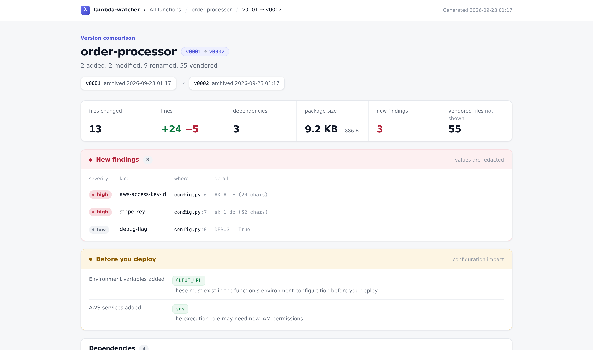

From a zip in Downloads to a diffable version
You keep downloading Lambda deployment packages as backups. Eight steps later, each one is an archived version with a manifest, a database row, and a git tag — and you can finally answer “what changed between the 2nd one and the 10th?”
THE PROBLEMTwo zips of the same Lambda, and no way to compare them
Ask Unix what changed between two versions of one function and you get an answer you can’t read. Almost all of it is a dependency bump.
$ diff -rq v0001/code v0002/code | wc -l 61 …of which 56 are site-packages/. The five that mattered are buried, and two of the real changes are not file changes at all.
Worse, the two most dangerous changes in that deploy don’t show up in a file diff in any form: the code started reading a new environment variable, and started calling a new AWS service. Those are the ones that break a deploy at 2am.
THE PIPELINE · 8 STEPSWhat happens when a zip lands
The order is the design. Deduplication happens before unpacking, unpacking before analysis, and the content check before anything is written. Two steps can end the run early — those are marked.
Notice the file, and wait for it
watcher.pyA folder watcher sees the new file and puts it in a queue. Before anything reads it, the tool waits until the file stops growing — same size, same timestamp, then one final open to confirm nothing still holds it.
Browsers finish a download by renaming foo.zip.crdownload to foo.zip — but not all of them do. Without the wait, you archive half a file.
Fingerprint the file
can exit hereTake a SHA-256 of the zip itself and check it against every download ever handled. Already seen this exact file? Record it and stop.
This is the cheap check, done before unpacking anything. It catches the literal duplicate — the same file dragged in twice, or a restart re-scanning the folder.
Work out which Lambda it is
identify.pyA ladder of eight strategies, tried in order, stopping at the first hit: an alias you taught it, a rule in your config, a get-function JSON sitting next to the zip, a function already in the archive, and finally the filename with browser junk stripped off.
Nine differently-named downloads land on one function. It records which strategy won and how confident it was — so a wrong guess is visible, and rename --alias fixes it permanently.
Unpack it safely
trust boundaryextract.pyExtract into a scratch directory, refusing anything dangerous: paths that escape the folder, absolute paths, symlinks, password-protected archives, and zip bombs — checked both from the archive’s index and again while writing.
A rejected archive goes to quarantine/ with a text file saying why. It is never silently dropped, and you can go read it.
Read the code
analysis/Seven analysers run over the unpacked tree: runtime, handler, dependencies, environment variables the code reads, AWS services it calls, hardcoded credentials, and a file-by-file inventory. Every file is marked as yours or vendored.
Dependencies get read twice — what requirements.txt asks for, and what is actually shipped inside the zip. Only the second one really ran.
Fingerprint the contents
can exit hereHash the sorted list of every file path paired with that file’s hash. Compare it to the newest archived version. Identical? Record it as unchanged and stop — no new version.
This is the step that makes the whole tool usable. Re-downloading unchanged code gives you a different file but the same contents, and this is what tells those apart.
Promote it to version N
store.pyThe scratch directory is moved — not copied — into its permanent home, named for its sequence number and a short content hash: 0002-7f887035. A complete manifest.json is written beside it, and the original zip is kept as package.zip.
Staging lives on the same disk as the archive, so this is a rename rather than a second full copy of a large tree.
Index it and commit it
db.py · gitmirror.pyEvery file, dependency, environment variable, service and finding is written into SQLite in a single transaction. Then the code is copied into that function’s own git repository and committed, tagged v0002.
The database is only an index — it can be thrown away and rebuilt from the manifests on disk. The directories are what’s true.
THE KEY IDEATwo fingerprints, two different questions
Steps 02 and 06 both hash something, and confusing them is the difference between a useful history and a folder full of noise.
“Is this the same file?”
A hash of the downloaded bytes. Fast, computed before unpacking. Two downloads of the same Lambda produce different values, because a zip carries timestamps and ordering that shift every time.
“Is this the same code?”
A hash over sorted (path, file hash) pairs from the unpacked tree. It ignores zip metadata entirely, so two downloads of the same Lambda produce the same value. This is what decides whether a version is new.
Which gives three distinct outcomes, and the tool names all three rather than collapsing them:
The code actually changed. A version directory is created, indexed and committed.
new file · new contentsA genuinely different download of identical code. Recorded in the log, but no version is created.
new file · same contentsByte-for-byte the same file as before. Caught at step 02, before anything is unpacked.
same filenew order-processor v0001 (archived a new version) new order-processor v0002 (archived a new version) unchanged order-processor v0002 (identical to version 2) duplicate-download ? (this exact file was already archived)
THE RESULTWhat ends up on disk
Nothing is created until it’s needed — the first download you ever archive builds this whole structure from an empty folder. Your Downloads folder is left untouched.
Because every version directory carries a full manifest.json, the whole archive is portable and self-describing. Copy it to another machine, run reindex, and the database rebuilds itself from the manifests.
THE PAYOFFThe diff you actually wanted
The same two versions the diff -rq at the top choked on. The 55 changed dependency files collapse into three version numbers, and the two changes that never appear in a file diff at all get sections of their own.
╭──────────────────────────────────────────────────────────────────────╮ │ order-processor v0001 → v0002 │ │ 2 added 2 modified 9 renamed 55 vendored (hidden) +24 / -5 lines │ ╰──────────────────────────────────────────────────────────────────────╯ size 8.3 KB → 9.2 KB (+886 B) Dependencies manager package from to origin + pip pydantic — 2.9.0 installed ~ pip boto3 1.34.0 1.35.20 installed ~ pip botocore 1.34.0 1.35.20 installed Env vars added: QUEUE_URL AWS services added: sqs ↑ these need to exist in the function's environment configuration New findings high aws-access-key-id config.py:6 AKIA…LE (20 chars) high stripe-key config.py:7 sk_l…dc (32 chars) low debug-flag config.py:8 DEBUG = True Files path + − size ~ lambda_function.py 9 2 +322 ~ requirements.txt 2 1 +17 + config.py 10 +235 + helpers/__init__.py → {db → helpers/db}.py 1 +33 → site-packages/boto3-1.{34.0 → 35.20}.dist-info/ · 4 files, 1 1 1 +1 edited → site-packages/botocore-1.{34.0 → 35.20}.dist-info/ · 4 files, 1 1 1 +1 edited
Four things are happening there that a file diff can’t do. The 55 vendored files are hidden and explained as three version numbers instead. A file that moved and was edited is reported as one rename, not an unrelated delete plus add, and a directory that moved whole — each bumped package’s dist-info — is reported as one line naming both names and the count, rather than one row per file saying the same thing. A new environment variable and a new AWS service are called out as configuration you have to apply before this deploys cleanly. And the credentials that appeared between the two versions get their own section — recorded redacted, so the secret itself never enters the index.
The rename is the one worth looking at closely. db.py moved into a package and gained a line in the same deploy — the case a plain diff can only describe as an unrelated delete plus add:
─────────────────────────────── {db → helpers/db}.py ─────────────────────────────── --- a/db.py +++ b/helpers/db.py @@ -9,5 +9,6 @@ "id": order["id"], "items": order["items"], "total": Decimal(str(order["total"])), + "status": "PENDING", } )
The same comparison renders as a self-contained HTML page, which is the one to send to someone else — --html --open on any diff, or lw report for the whole history with a page per step. It is one file with the stylesheet inlined — the file icons are drawn into the page and the syntax highlighting is computed when it is written, so nothing is fetched — and it survives being emailed or dropped in a bucket:

the published copy masks the demo's two fake credentials in the file diff — nothing else is altered
IN PRACTICEThe commands you’d actually use
Start the watcher once and leave it; everything else is reading what it archived. Every command below is expanded with the output it actually prints — these are captures, not sketches.
show is the one to reach for first, and the line worth noticing in it is 2 declared, 3 installed: requirements.txt names two packages and three arrived in the zip. The third came along as a transitive dependency, and it is the installed list — not the declared one — that describes what actually ran.
lw watchWatch the download folders and archive everything that lands. Leave it running.
lambda-watcher 0.1.1 — archiving into ~/.lambda-watcher
watching ~/Downloads. Press Ctrl-C to stop.
new order-processor v0001 order-processor.zip — archived a new version
new order-processor v0002 order-processor (1).zip — 2 added, 2 modified, 9 renamed, 55 vendored
+24/-5 lines · new: 1 env var, 1 AWS service, 3 secrets
report: ~/.lambda-watcher/reports/order-processor/v0001-v0002.html
unchanged order-processor v0002 order-processor (2).zip — identical to version 2
done
lw initWrite a commented config file you can edit. Optional — the defaults work.
wrote ~/.lambda-watcher/config.yaml archive root: ~/.lambda-watcher watching: ~/Downloads Next: lw start
lw doctorCheck the config, watch folders, store, git and disk space before you rely on it.
check status detail config file ok ~/.lambda-watcher/config.yaml archive root ok ~/.lambda-watcher watch dir ok ~/Downloads git mirror ok enabled index ok 0 function(s), 0 version(s) disk free ok 29.6 GB
lw ingest FILE...Archive zips by hand, in the order you pass them.
new order-processor v0001 (archived a new version) new order-processor v0002 (archived a new version) unchanged order-processor v0002 (identical to version 2) duplicate-download ? (this exact file was already archived)
lw backfill DIRImport a folder of old backups, oldest first, so version numbers match history. --dry-run shows the names it would assign.
file modified would become via order-processor.zip 2026-09-04 05:52 order-processor filename/medium order-processor (1).zip 2026-09-04 05:52 order-processor filename/medium order-processor (2).zip 2026-09-04 05:52 order-processor filename/medium 3 file(s). Re-run without --dry-run to import.
lw lsEvery function archived so far.
function versions latest last seen runtime order-processor 2 v0002 2026-09-04 05:53 python
lw versions FNEvery archived version of one function, newest first.
order-processor
version archived files size handler downloaded as label
v0002 2026-09-06 15:35 68 9.2 KB lambda_function… order-processor
(1).zip
v0001 2026-09-06 15:35 61 8.3 KB lambda_function… order-processo…
Compare the last two: lw diff "order-processor"
lw show FN [V]Everything one version contains: runtime, handler, dependencies, env vars, services and findings.
order-processor v0002
archived 2026-09-06 15:35
source order-processor (1).zip
runtime python (high confidence)
handler lambda_function.lambda_handler
contents 68 files, 9.2 KB (5 first-party, 57 lines)
tree hash 7f887035711ce470
location ~/.lambda-watcher/functions/order-processor/versions/0002-7f887035
Dependencies 2 declared, 3 installed
boto3 1.35.20
botocore 1.35.20
pydantic 2.9.0
Environment variables read
QUEUE_URL, TABLE_NAME
AWS services used
dynamodb, sqs
Findings
high aws-access-key-id config.py:6 AKIA…LE (20 chars)
high stripe-key config.py:7 sk_l…dc (32 chars)
low debug-flag config.py:8 DEBUG = True
lw diff FNCompare two versions — the last two unless you say otherwise. Add --html --open for the report below.
╭──────────────────────────────────────────────────────────────────────╮
│ order-processor v0001 → v0002 │
│ 2 added 2 modified 9 renamed 55 vendored (hidden) +24 / -5 lines │
╰──────────────────────────────────────────────────────────────────────╯
size 8.3 KB → 9.2 KB (+886 B)
Dependencies
manager package from to origin
+ pip pydantic — 2.9.0 installed
~ pip boto3 1.34.0 1.35.20 installed
~ pip botocore 1.34.0 1.35.20 installed
Env vars added: QUEUE_URL
AWS services added: sqs
↑ these need to exist in the function's environment configuration
New findings
high aws-access-key-id config.py:6 AKIA…LE (20 chars)
high stripe-key config.py:7 sk_l…dc (32 chars)
low debug-flag config.py:8 DEBUG = True
Files
path + − size
~ lambda_function.py 9 2 +322
~ requirements.txt 2 1 +17
+ config.py 10 +235
+ helpers/__init__.py
→ {db → helpers/db}.py 1 +33
→ site-packages/boto3-1.{34.0 → 35.20}.dist-info/ · 4 files, 1 1 1 +1
edited
→ site-packages/botocore-1.{34.0 → 35.20}.dist-info/ · 4 files, 1 1 1 +1
edited
lw report FNBuild a browsable HTML history: an index plus a diff for every step.
wrote ~/.lambda-watcher/reports/order-processor/index.html (2 versions)
lw export FN VGet a version back out as a deployable zip. This is your rollback.
wrote ~/rollback.zip (17.4 KB)
lw open FN [V]Open the mirror in your editor — one folder named after the function, with every version in its history.
~/.lambda-watcher/repos/order-processor
lw git FN ...Run git inside that function's mirror, where git diff v0002 v0010 just works.
7bdc51c order-processor v0002 12f17f7 order-processor v0001
lw path FN [V]Print where something lives, for cd "$(lw path order-processor)".
~/.lambda-watcher/repos/order-processor
lw search TERMFind a filename or package across every function and version at once.
Files function version path size order-processor v0002 site-packages/boto3/__init__.py 24 B order-processor v0002 site-packages/boto3-1.35.20.dist-info/INSTALLER 4 B order-processor v0002 site-packages/boto3-1.35.20.dist-info/METADATA 83 B order-processor v0002 site-packages/boto3-1.35.20.dist-info/WHEEL 91 B order-processor v0002 site-packages/boto3-1.35.20.dist-info/top_level.t… 6 B order-processor v0001 site-packages/boto3/__init__.py 23 B order-processor v0001 site-packages/boto3-1.34.0.dist-info/INSTALLER 4 B order-processor v0001 site-packages/boto3-1.34.0.dist-info/METADATA 82 B order-processor v0001 site-packages/boto3-1.34.0.dist-info/WHEEL 91 B order-processor v0001 site-packages/boto3-1.34.0.dist-info/top_level.txt 6 B Dependencies function version package version order-processor v0002 boto3 1.35.20 order-processor v0001 boto3 1.34.0
lw logRecent activity — including the downloads that were skipped, and why.
when event function detail
2026-09-06 15:35 duplicate-download - order-processor (2).zip
{"zip_sha256":
"707f02c2dae94945d6d2530d1…
2026-09-06 15:35 unchanged order-processor order-processor (2).zip
{"seq": 2}
2026-09-06 15:35 new-version order-processor order-processor (1).zip
{"seq": 2, "tree_hash":
"7f887035711ce470b395beef9…
2026-09-06 15:35 new-version order-processor order-processor.zip
{"seq": 1, "tree_hash":
"7fc98e0e8bb36d603d0286a21…
lw label FN V TEXTAnnotate a version so you can recognise it later.
labelled order-processor v0002: prod deploy 2026-03-01
lw rename OLD NEWFix a misidentified name. --alias makes the fix stick for future downloads.
renamed order-processor → orders-api future downloads containing 'order-proc' will map here automatically
lw reindexRebuild index.db from the manifests on disk. The archive is the source of truth.
reindexed 1 function(s), 2 version(s)
WORTH KNOWINGWhere the boundaries are
Only the code is archived. A deployment package doesn’t contain the function’s configuration — memory, timeout, environment variable values, IAM role, layers or triggers. The tool infers what it can from the code and flags it. Save aws lambda get-function --function-name X > X.json next to the zip and it gets archived too — and doubles as a naming hint at step 03.
Secret scanning is a tripwire, not a security tool. It catches the obvious cases and skips placeholders. Treat a finding as a reason to look, not a verdict.
No AWS API calls, ever. The tool only reads files already sitting on your disk. It needs no credentials and works offline. That’s a deliberate boundary, not a missing feature.
Run the examples yourself. Every capture on this page comes out of one script, against the real pipeline — no AWS account, no network. It builds the order-processor zips, ingests them, and prints each block in the order you just read them:
The zips are stamped with a pinned build time, so the version directories come out as 0001-7fc98e0e and 0002-7f887035 on your machine too — the same ones quoted above.
Deeper reading: how the examples are built, design notes on why the analysis and diff layers work the way they do, and autostart recipes for launchd, systemd and Task Scheduler.